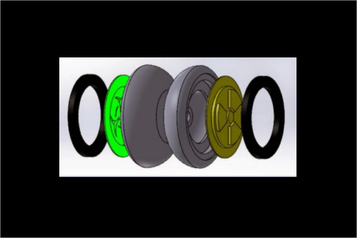
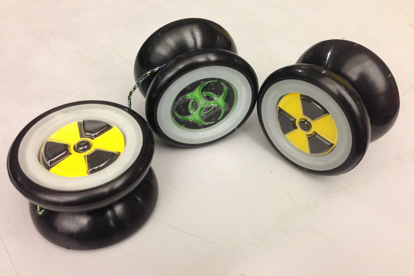
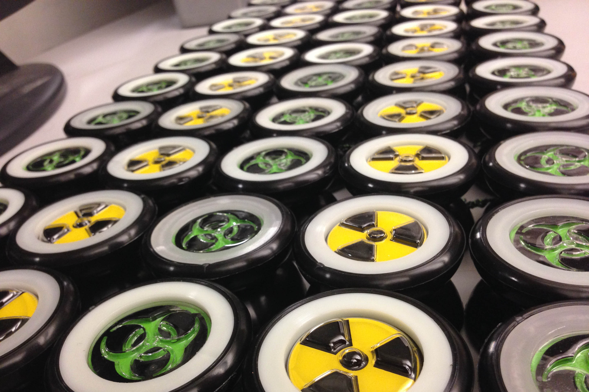
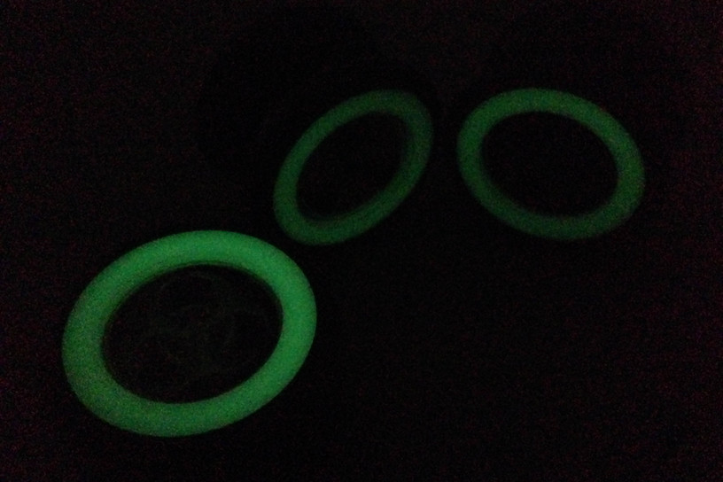

Radioactive Yoyos





This project was for MIT's Advanced Design and Manufacturing Class (2.008). Each group worked on a team of 6 to design, manufacture, and assemble 50 identical yoyos. In order to do this, we had to balance our priorities in lowering the cost of each yoyo, decreasing time necessary to assemble, and adding more complex yoyo features.
We machined the molds for our thermoformed and injection molded parts and optimized the parameters for our final production runs. We took record of part measurements that were critical to assembly during this process to account for production variability.
During assembly, our original idea of spraypainting the thermoformed parts was soon discarded after we realized that the features were too detailed to get a nice overlay of two colors. We then brainstormed new ways to color our parts and settled on using vinyl stickers. Although there were some difficulties with air bubbles in the stickers, they provided the nice color finish we were looking for.
Used both Mastercam and Solidworks to design the part molds, taking tolerances and shrinkage into consideration.
Worked on a team of six and learned to resolve design disagreements and schedule conflicts throughout the project.
Brainstormed a work around for spraypainting by using vinyl stickers instead for cleanliness and better workability.
With more time, we could have added even more features such as flashing LEDs when in motion.